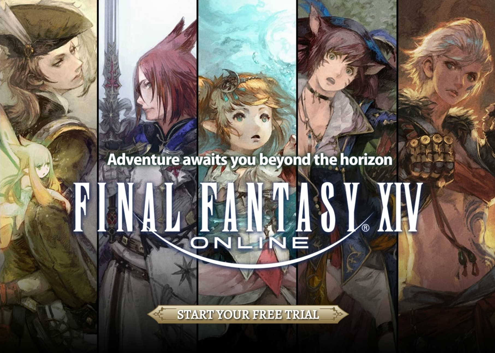
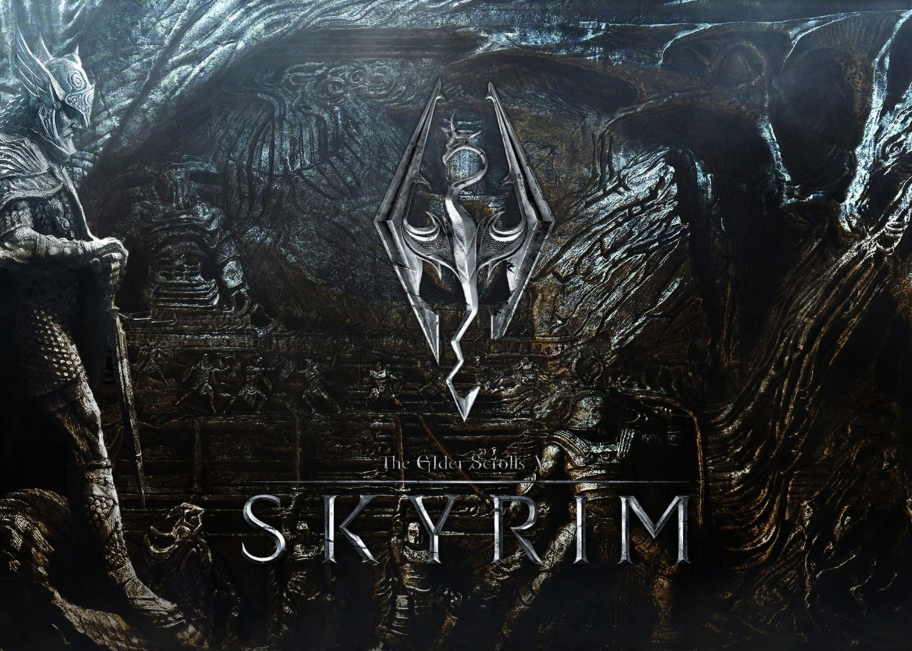

When I'm not busy with work or school, I usually am playing video games. Some of my favorites include the following.
Destiny 2
Destiny 2 is a free-to-play online first-person shooter video game developed by Bungie. It was originally released as a pay to play game in 2017 for PlayStation 4, Xbox One, and Windows. It became free-to-play, utilizing the games as a service model, under the New Light title on October 1, 2019, followed by the game's release on Stadia the following month, and then PlayStation 5 and Xbox Series X/S platforms in December 2020. The game was published by Activision until December 31, 2018, when Bungie acquired the publishing rights to the franchise. It is the sequel to 2014's Destiny and its subsequent expansions.
Final Fantasy XIV
Final Fantasy XIV is a massively multiplayer online role-playing game (MMORPG) developed and published by Square Enix. Directed and produced by Naoki Yoshida, it was released worldwide for Windows and PlayStation 3 in August 2013, as a replacement for the failed 2010 version of the game, with support for PlayStation 4, PlayStation 5, and macOS releasing later. Final Fantasy XIV takes place in the fictional land of Eorzea, five years after the events of the original 2010 release. At the conclusion of the original game, the primal dragon Bahamut escapes from its lunar prison to initiate the Seventh Umbral Calamity, an apocalyptic event which destroys much of Eorzea. Through the gods' blessing, the player character escapes the devastation by time traveling five years into the future. As Eorzea recovers and rebuilds, the player must deal with the impending threat of invasion by the Garlean Empire from the north.
Skyrim
The Elder Scrolls V: Skyrim is an action role-playing video game developed by Bethesda Game Studios and published by Bethesda Softworks. It is the fifth main installment in The Elder Scrolls series, following 2006's The Elder Scrolls IV: Oblivion, and was released worldwide for Microsoft Windows, PlayStation 3, and Xbox 360 on November 11, 2011. The game is set 200 years after the events of Oblivion, and takes place in Skyrim, the northernmost province of Tamriel. Its main story focuses on the player's character, the Dragonborn, on their quest to defeat Alduin the World-Eater, a dragon who is prophesied to destroy the world. Over the course of the game, the player completes quests and develops the character by improving skills. The game continues the open world tradition of its predecessors by allowing the player to travel anywhere in the game world at any time, and to ignore or postpone the main storyline indefinitely.